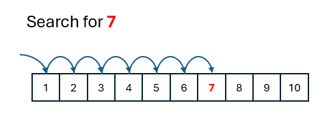

Searching Algorithms
Objectives
- Understand the concept of linear search as a sequential algorithm for finding a specific element in a list.
- Know how to implement a linear search algorithm in pseudocode and a programming language (e.g., Python).
- Understand the binary search algorithm as a more efficient searching technique that requires a sorted list.
- Know how to implement a binary search algorithm in pseudocode and a programming language (e.g., Python).
- Compare the linear search and binary search algorithms in terms of efficiency and suitability for different scenarios.
- Gain experience in tracing and debugging code for both linear and binary search algorithms.
These learning objectives cover a range of skills and knowledge related to searching algorithms, algorithmic efficiency, coding implementation, and problem-solving in a computer science context.
Sifting through a whole bunch of data looking for a particular item is a very common occurrence, not least when we use a computer. There are a number of algorithms we can use to search for data. Here we look at two:
- Linear Search
- Binary Search
Linear Search
Take something simple as a shopping list e.g.
- Milk
- Eggs
- Tomatoes
- Mince
- Flour
We want to find if a particular item exists in the list, say "Mince". Being human it's trivial to scan through such a short list and find that "Mince" is indeed in the list. We do this so quickly without really thinking about the steps we are taking to arrive at the answer i.e. the algorithm we are using. If we are going to get a machine to do this for us then we need to work through that algorithm.
The item we are looking for is "Mince", this is known as the search key. We have the list of items held as a list of strings, or an array of strings. We compare our search key against the first item in the list: "Milk". "Mince" is not the same as "Milk", so we then move on to the next item in the list. "Eggs", again is not the string we are looking for. We continue to do this until we find "Mince" as the fourth item in the list and we can quit searching.
If we were looking for, say, "Crisps" we would get to the end of the list having not found it as "Crisps" does not exist in our current list.
We've carried out a linear search, sometimes called a sequential search. The linear search is a relatively simple searching algorithm that looks for a specific element in a list one by one, checking each element until a match is found or the end of the list is reached.
So, when looking for "Mince" each item is compared to this search key:
Warning
If the animation does not appear, just refresh the page!
Linear Search Animation
The process again:
- Start from the beginning of the list.
- Compare the target element with each element in the list sequentially
- If a match is found, return the index of the element; otherwise, continue searching until the end of the list
- If the end of the list is reached without finding a match, indicate that the element is not present.
In Python we can easily write the code for the linear search:

Notice how we have to start at the beginning of the list and compare the search key with every item in the list. The boolean variable found is set to True if the item is there. In the current algorithm we keep on searching for the item even when it has already been found. This is the worst case behaviour of our algorithm i.e. if n is the length of the list then the worst case means we will be making a total of n comparisons. Our current algorithm is always the worst case! If the item we're looking for is the first item in the list we keep on searching ... what a waste of computing time. We can improve on this by changing the loop in lines 8-10 to:
As soon as we find the search key in our list the loop will terminate. Our best case will not be when the item we're looking for is the first item in the list. The worst case remains, it will be when the search key is the last item in the list (or not in the list).
With such a small number of items this change will make little difference but as the number of items in our list increases, and increases, it will being to have a significant impact on how quickly our algorithm will return a result. Mathematically, computer scientists use something called BigO notation to describe the efficiency of an algorithm. BigO notation is not part of the GCSE syllabus but we would describe the linear search as O(n) where n is the number of items. As n grows so does the time taken for this algorithm to complete (in the worst case).
The study of algorithms is about finding the best algorithm for the given situation.
Note
It would be even better to put this algorithm into its own function passing in the search key and the item list as parameters to this function.
If there is a small dataset, and the items in that dataset are not ordered then a linear search will be fine. However, for large datasets it will very quickly begins to slow down and there is a better alternative, the binary search.
Binary Search
The binary search is a more efficient searching algorithm that requires the list to be sorted. Remember that point, it's a common examination question, the items in the dataset must be sorted.
It works by repeatedly dividing the list of items in half until the target element is found. Think of the children's game of "Guess The Number". It starts with one player thinking of a number between say 1 and 100. We could approach this linearly i.e. "Is it 1?", "Is it 2?", "Is it 3?" etc.. Or we could ask "Is it higher than 50?" If the answer is "yes" then we can automatically discount all the values between 1 and 50 thus chopping the original list in half.
In outline, the binary search works as follows:
- Start with the entire sorted list.
- Compare the target element with the middle element of the list.
- If the target is equal to the middle element, the search is successful.
- If the target is less than the middle element, repeat the search on the lower half of the list.
- If the target is greater than the middle element, repeat the search on the upper half of the list.
- Continue dividing the search interval until the target is found or the interval becomes empty.
A binary search is generally more efficient than linear search for large datasets, especially when the data is sorted. Linear search may require checking every element in the worst case.
It's a more complicated algorithm to implement:
binary_search that takes a sorted list (items) and a target element (target). It returns the index of the target element if found, or \(\(-1\)\) if the element is not in the list.
The function uses a while loop to repeatedly narrow down the search range by adjusting the low and high indices based on the comparison of the middle element with the target.
The function can be called:
Copy the code to the IDE you use for Python programming and try it out. Change the items being searched. They can be strings or floats, the data type does not matter.
Note
In the next section we'll use these algorithms to learn an important skill for debugging programs, that of tracing code.
Warning
If the animation does not appear, just refresh the page!
Binary Search Animation
Mathematically, using the Big O notation introduced in the previous section, we can work out the number of "guesses" required or a given number of items:
Number of items in the list (n) |
Maximum number of "guesses" |
|---|---|
| 10,000 | 14 |
| 1,000 | 10 |
| 500 | 9 |
| 100 | 6 |
| 50 | 5 |
| 10 | 3 |
This is \(O(log_2 n)\)